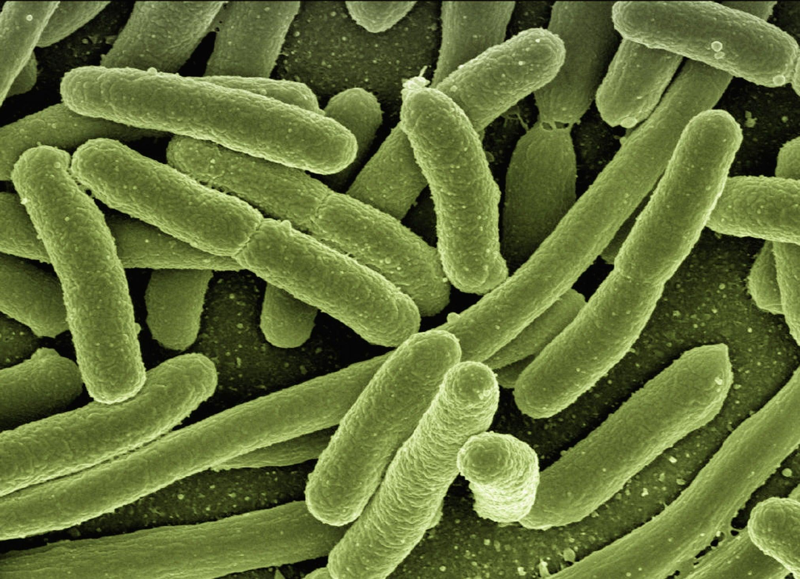
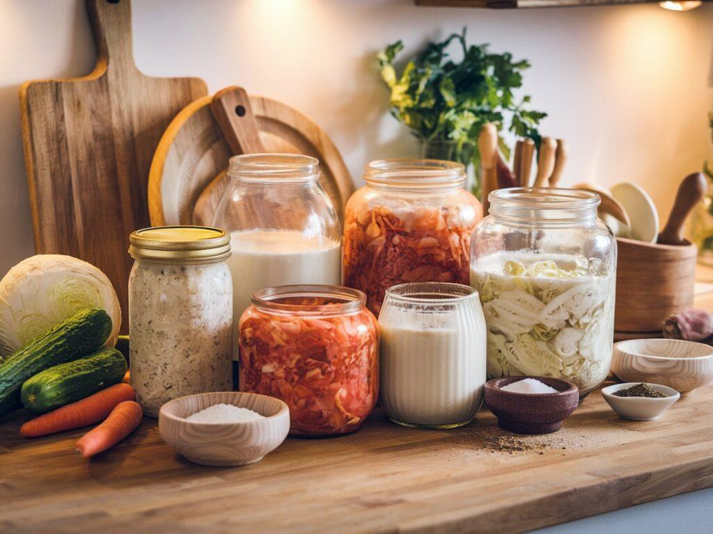
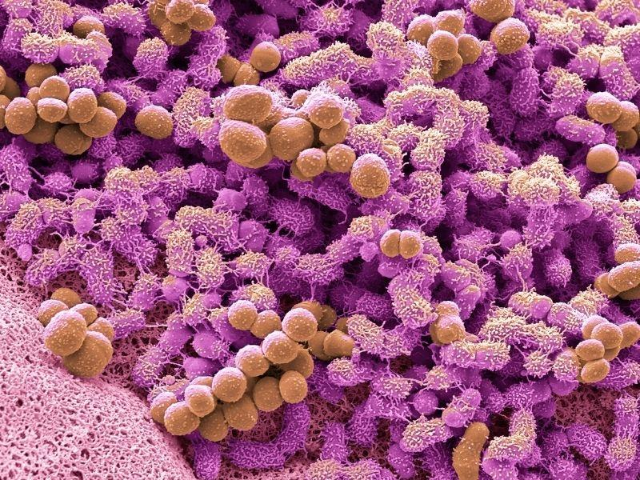
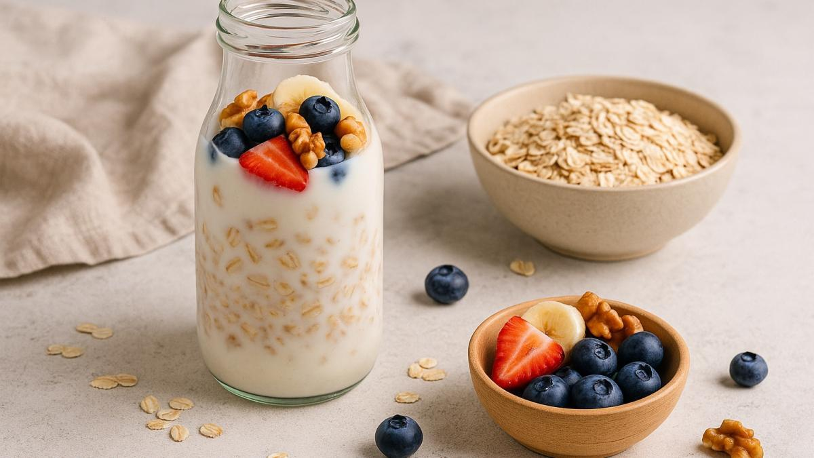

Demystifying the gut microbiome, probiotic cell pathways, and the biological importance of eating raw living organisms daily.

Deep within your digestive tract lives a community of over 100 trillion microbes—bacteria, viruses, and fungi. Together, this ecosystem is known as the **gut microbiome**. It works as a fully functional organ, helping synthesize essential vitamins, manage blood glucose response, and protect against cellular pathogens.
Modern sterile diets, chemical preservatives, and stress degrade the diversity of this ecosystem, leading to digestive issues, chronic brain fog, skin flares, and fatigued energy levels.
Re-populating this internal forest with raw, unpasteurized bacteria is the most natural way to re-establish physiological balance.

Many shelf-stable grocery store kimchis and kefirs are heat-pasteurized. While this extends their shelf life, the thermal processing kills the beneficial live organisms completely, leaving you with simple flavoring rather than probiotic wellness.
CULTURA products are kept entirely raw and active. We control fermentation with cold-stabilization, slowing but not stopping bacterial activity. Every single bite delivers live, active strains of Lactobacillus plantarum, Leuconostoc mesenteroides, and Saccharomyces grains directly to your system.
Our Lab Quality StandardsTake our brief clinical quiz to determine which fermented food or starter kit fits your dietary experience and wellness goals.

What does colony-forming unit (CFU) mean? Learn why cellular vitality is more critical than absolute count metrics.
How bacterial signaling pathways interact with cellular tissue to modulate inflammatory skin flares and acne.

Why eating fiber-rich prebiotics alongside fermented probiotics accelerates strain colonizations in the bowel.